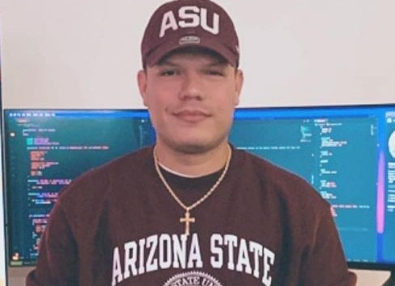

Case Study 1: Social Media Account Recovery
Regained access to a hacked Instagram account within 3 hours.

I am a dedicated Cybersecurity Expert with extensive experience in helping individuals and businesses recover compromised digital assets. My primary focus is on securing and restoring access to hacked social media accounts, gaming profiles, and lost cryptocurrency funds due to scams, incorrect transactions, or platform freezes.
"I thought my crypto was gone forever until I reached out to Adrian. his expertise and persistence saved me thousands of dollars!"
— John D., Investor
"After months of trying to get my hacked Twitter account back, Adrian did it in just a few hours. Thank you so much!"
— Sarah M., Content Creator
"A scammer tricked me into sending them Ethereum, and I thought there was no way to get it back. But Adrin proved me wrong. Through his network and investigative skills, he managed to trace the transaction and recover over 90% ."
— David S., Victim of Scam
"I lost access to my Gmail account after falling victim to a phishing attack. Adrian quickly identified the issue and helped me regain control. he also educated me on how to avoid similar attacks in the future. I’m extremely grateful!"
— Emily R., Business Owner
"When my YouTube channel was hacked, I thought I’d lose everything I had built over the years. Adrian worked tirelessly to restore my channel and even helped recover some of the deleted videos. his expertise saved my career!"
— Ryan T., Content Creator
"I accidentally sent Bitcoin to the wrong wallet address, and I was devastated. Adrian not only explained the situation clearly but also worked tirelessly to recover my funds. Thanks to his expertise, I got most of my money back!"
— Michael R., Cryptocurrency Trader
"My gaming account on Steam had been hacked, and all my valuable items were stolen. After reaching out to Adrian, he quickly identified the breach and helped me regain control of my account. he even assisted in recovering some of the stolen items through Steam support. I can’t thank them enough!"
— Alex P., Gamer
"When my crypto exchange account was frozen without warning, I felt helpless. Adrian stepped in and navigated the complex dispute resolution process with professionalism. Within two weeks, my account was unfrozen, and my funds were restored. I highly recommend his services!"
— Emma L., Investor
"A scammer tricked me into sending them Ethereum, and I thought there was no way to get it back. But Adrian proved me wrong. Through his network and investigative skills, he managed to trace the transaction and negotiate a partial refund. his dedication is unmatched!"
— David S., Victim of Scam
"After being locked out of my Instagram business account due to a hack, my entire online presence was at risk. Adrian acted fast, working directly with Instagram support to verify my identity and restore access. My business is back on track thanks to his quick response!"
— Sarah K., Social Media Marketer
"I lost access to my Discord server after someone gained unauthorized access. Adrian guided me through the recovery process and even implemented stronger security measures to prevent future attacks. his attention to detail is impressive!"
— James T., Community Manager
"When my crypto wallet was compromised, I panicked. Adrian provided calm and expert advice, helping me secure what remained and recover part of the stolen funds. his knowledge of blockchain technology is truly remarkable."
— Lisa W., Crypto Enthusiast
"As a small business owner, losing access to my company's Twitter account due to a phishing attack was catastrophic. Adrian James came to the rescue, identifying the breach and assisting in regaining control. he also educated me on how to avoid such incidents in the future."
— Robert H., Business Owner
"A friend referred me to Adrian after I fell victim to a fake investment scheme. but he also traced the scammers' digital footprint. While full recovery isn't always possible, his efforts gave me peace of mind and closure."
— Clara G., Victim of Investment Scam
"My child’s gaming account was hacked, and several in-game purchases were made without permission. Adrian James handled everything professionally, contacting the game developer to reverse the charges and secure the account. I’m grateful for his assistance!"
— Jennifer M., Parent